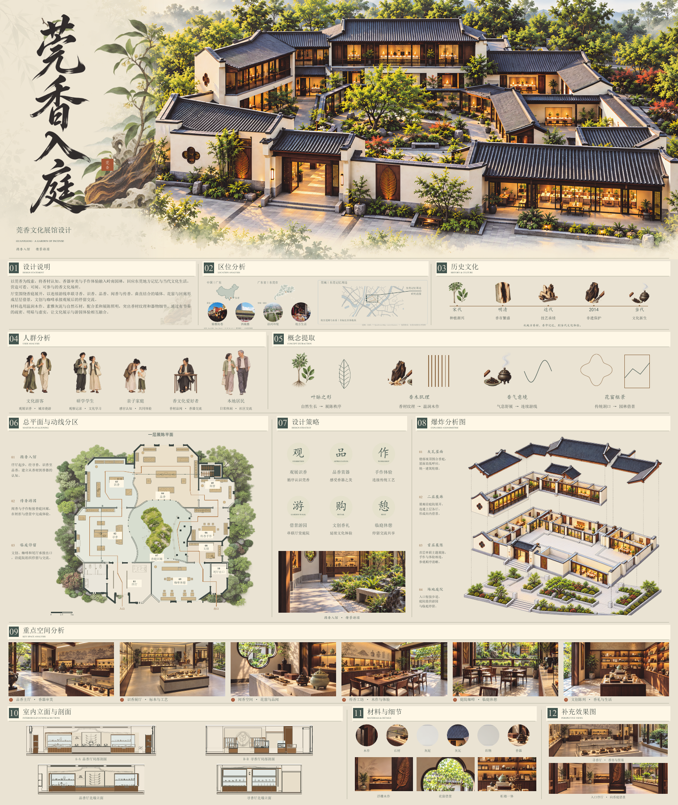

莞香入庭 · 毕设展板审核
毕设展板审核 · r84
莞香入庭，
一卷成境。
总平面中庭去除树木，保留低矮植物、草地与石景；标题增加莞香枝叶与香木贴图。设计说明扩写为200字，区位加入四张有来源的实景圆图，人群增加本地居民。总平面与爆炸图左侧增加紧凑说明，纸底加深为暖灰米色。既有效果图与原生图纸几何保留。
竖版 160 × 190 厘米 · 四周 3mm 出血
米白、木褐与灰绿 · 保留题名，不放署名
PDF图片按实际尺寸达到有效300ppi，文字图纸保持矢量。图片经AI超分增强，非原生300ppi摄影细节；当前CMYK配置待印厂匹配与打样。
当前展板与项目成果
点击查看完整原图。